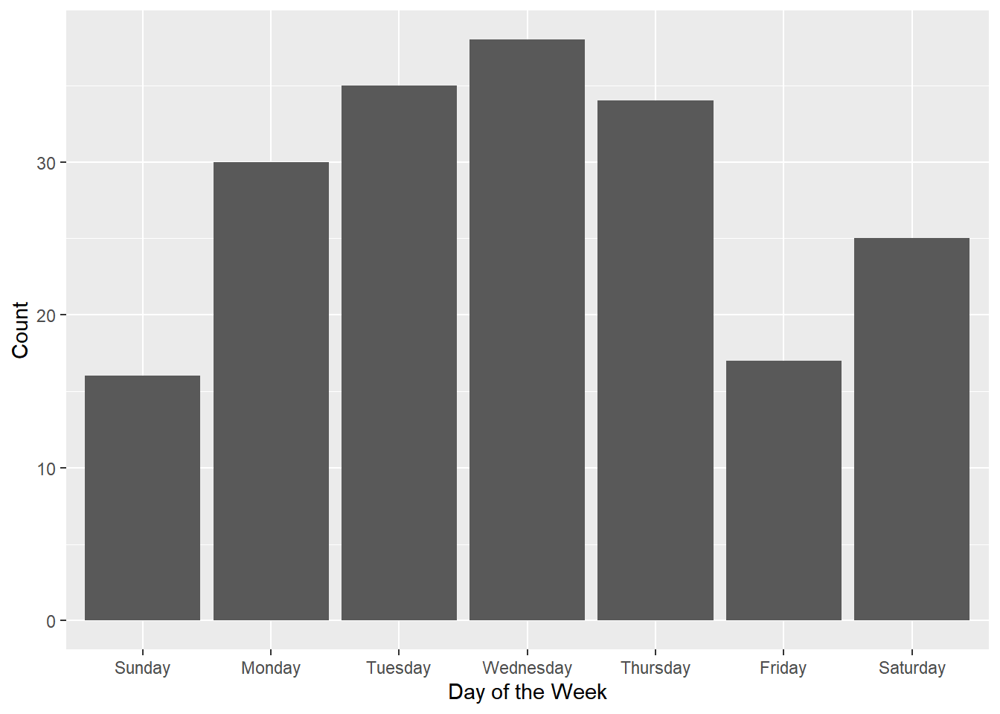
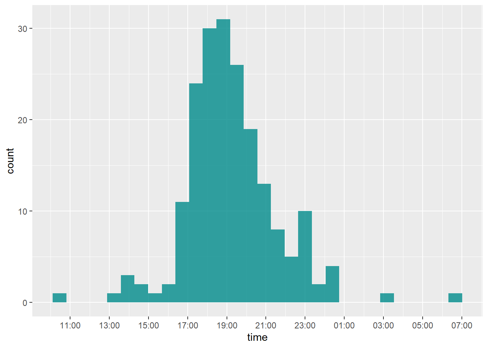
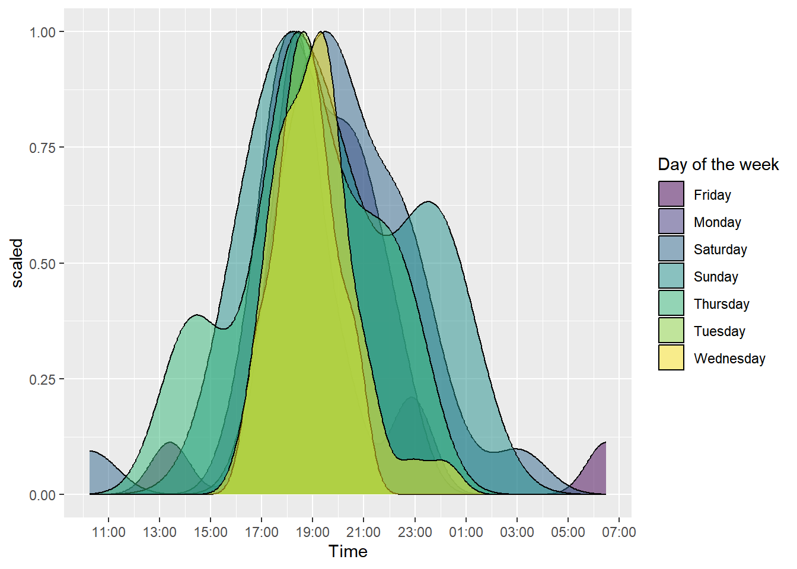

# A tibble: 195 × 5
activity_id date time activity_name activity_type
<dbl> <chr> <chr> <chr> <chr>
1 8405125381 Jan 17, 2023 8:34:42 AM Afternoon Run Run
2 8405187111 Jan 17, 2023 8:52:32 AM Afternoon Run Run
3 8411187231 Jan 18, 2023 10:52:06 AM Evening Run Run
4 8416073391 Jan 19, 2023 8:30:17 AM Afternoon Run Run
5 8416274053 Jan 19, 2023 9:35:24 AM Afternoon Run Run
6 8421284432 Jan 20, 2023 8:57:31 AM Afternoon Run Run
7 8426220243 Jan 21, 2023 9:43:41 AM Afternoon Run Run
8 8426310712 Jan 21, 2023 9:59:15 AM Afternoon Run Run
9 8464355932 Jan 28, 2023 10:57:34 AM Evening Run Run
10 8464607117 Jan 28, 2023 11:35:47 AM Evening Run Run
# ℹ 185 more rows
Turn date into proper date formate, make a day of the week wday column
data_proper_date <- data_split_date |># turn to system's date formatmutate(date =as.Date(date, format ="%b %d, %Y")) |>mutate(wday =weekdays(date))
Complicated magic to finally handle time, and add the 8 hours (can’t make timezone functions work)
# Play with proper_time before appending to dataframeproper_time <- data_proper_date$timeproper_time <- proper_time |>strptime("%I:%M:%S %p", tz ="UTC") |>as.POSIXct()proper_time <- hms::hms(second(proper_time), minute(proper_time), hour(proper_time))# finally on datetime format that can be added to proper_time <- proper_time |>as.POSIXct() +hours(8)
The time being graphed is the start time of the activity
Bar chart
Chart runs by day of the week
week <-c("Sunday", "Monday", "Tuesday", "Wednesday", "Thursday", "Friday", "Saturday")ggplot( data_proper_date, aes(x = wday)) +geom_bar() +# labelslabs(x ="Day of the Week", y ="Count") +# order day of the weeks properlyscale_x_discrete(limits = week)

Density plot
A density plot on the time of start of runs
library(scales)
Attaching package: 'scales'
The following object is masked from 'package:purrr':
discard
The following object is masked from 'package:readr':
col_factor
ggplot(data_fixed_time) +geom_density(aes(x = time, y =after_stat(scaled)),fill ="darkcyan", alpha =0.8 ) +# fix x ticksscale_x_datetime(breaks =date_breaks("2 hours"), labels=date_format("%H:%M"))
`stat_bin()` using `bins = 30`. Pick better value with `binwidth`.

Multiple densities
Density plots like previous but superimposed across each day of the week
library(viridis)
Loading required package: viridisLite
Attaching package: 'viridis'
The following object is masked from 'package:scales':
viridis_pal
ggplot(data_fixed_time) +geom_density(aes(x = time, group = wday, fill = wday, y =after_stat(scaled)), alpha =0.5 ) +# labelslabs(x ="Time", group ="Day of the week", fill ="Day of the week", ) +# x ticks by scale_x_datetime(breaks =date_breaks("2 hours"), labels =date_format("%H:%M")) +# fancier colors from viridisscale_fill_viridis(discrete =TRUE)

Ridgelines
Like multiple densities but separated by day, less messier
library(ggridges)ggplot(data_fixed_time) +geom_density_ridges(aes(x = time, y = wday, fill = wday), alpha =0.7, scale =1, show.legend =FALSE ) +labs(x ="Time", y ="Day") +# order the wday (day of the week)scale_y_discrete(limits = week) +# x-axis name and intervalsscale_x_datetime(breaks =date_breaks("2 hours"), labels =date_format("%H:%M")) +# coloringscale_fill_viridis(discrete =TRUE)